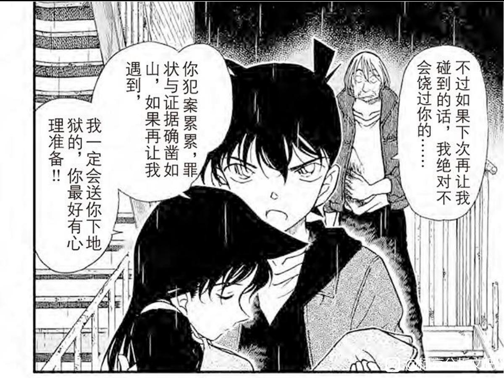
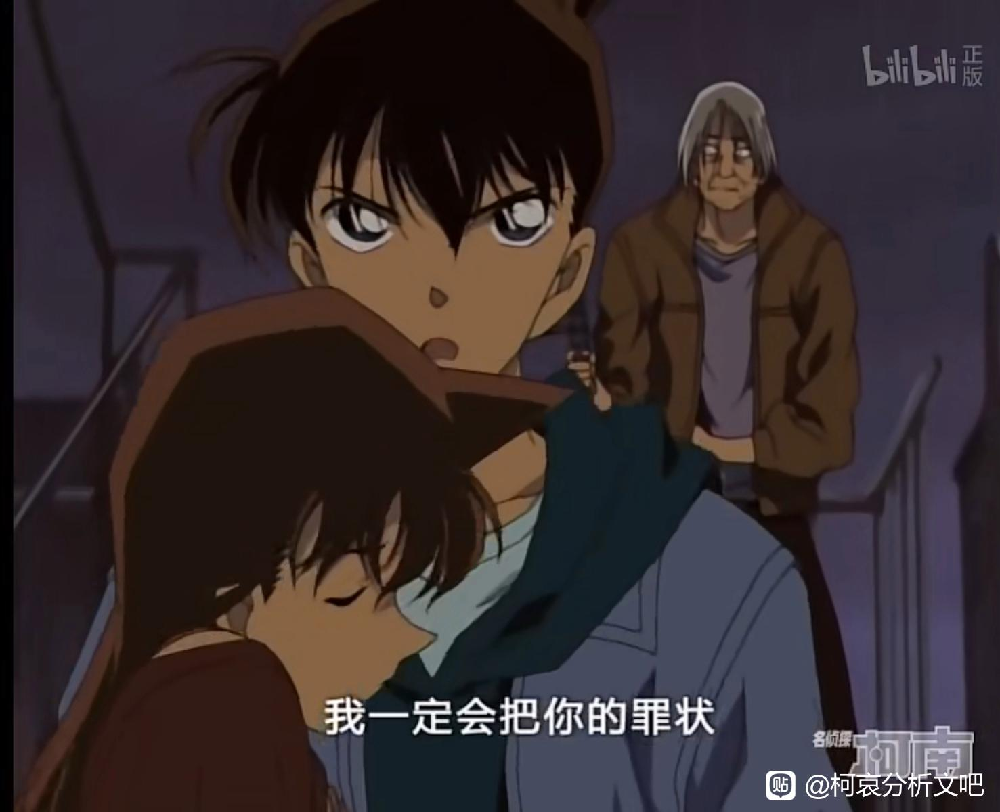
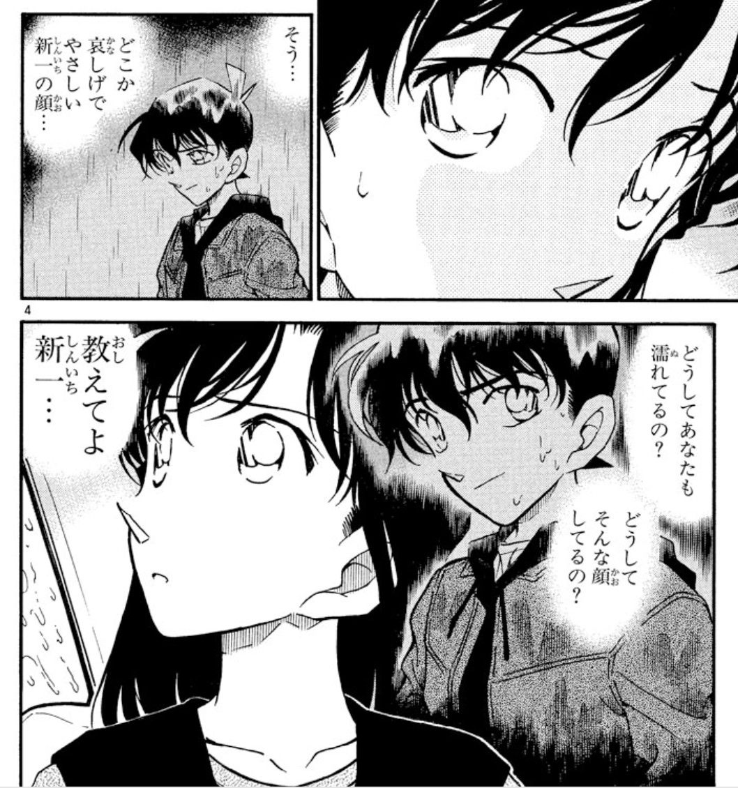
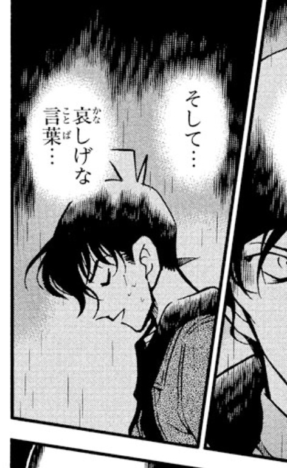
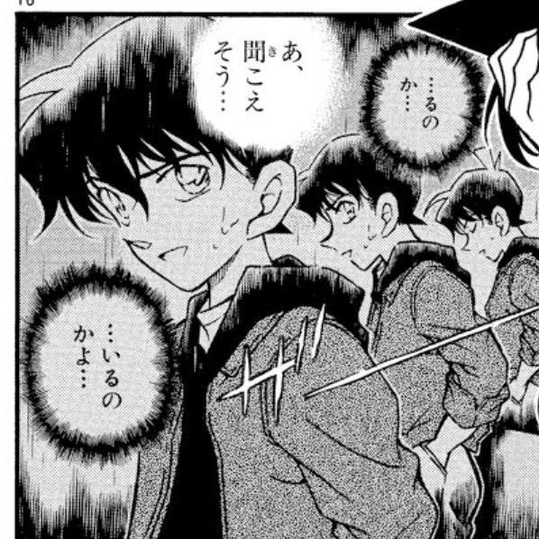
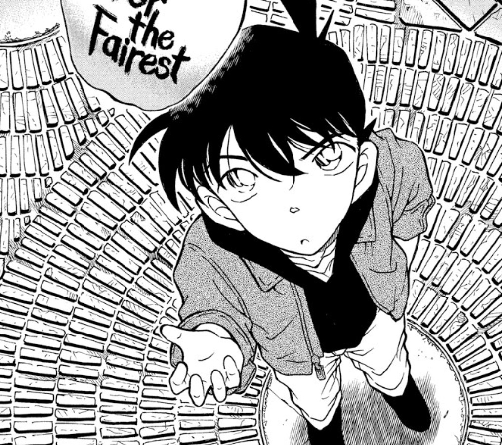
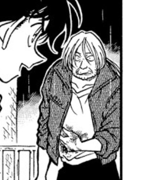
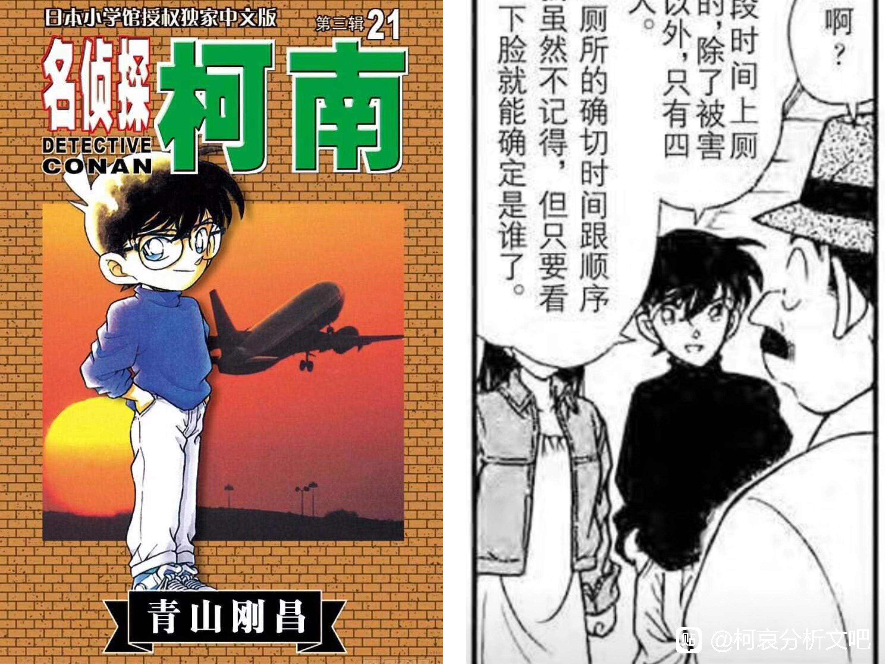
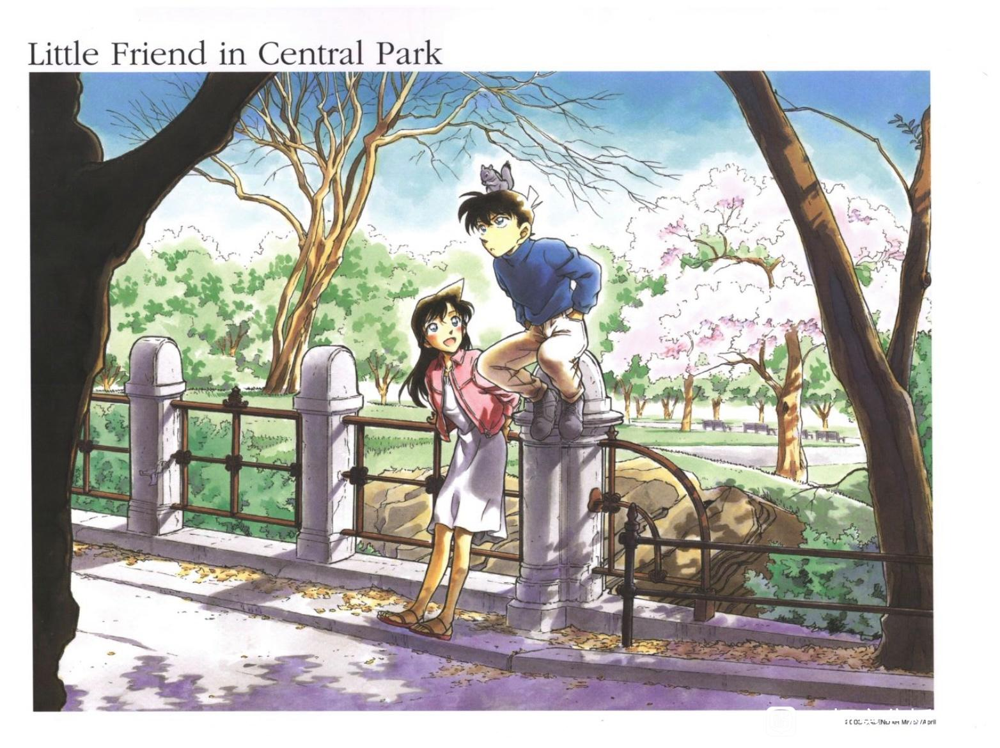
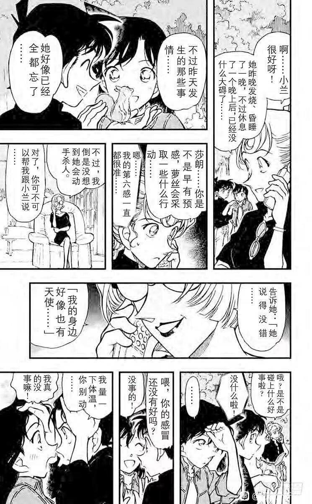

工藤新一穿的衣服是：白色衬衫+黑色连帽衫+灰色夹克外套
杀人魔穿的衣服是：白色衬衫+灰色夹克外套
白色衬衫：领口略低于锁骨，V领，领口有褶皱设计
灰色夹克外套：衣领翻边，边缘花纹为两道，清晰的肩部设计，袖口设计有纽扣，方便卷上去。
总结：工藤新一和杀人魔穿的衬衣和外套是一样的，只多一件中间的黑色连帽衫。
图很多，大家可以自己找，我只放一个最直观的上来。
BTW动画组上色不同。
杀人魔穿的衣服是：白色衬衫+灰色夹克外套
白色衬衫：领口略低于锁骨，V领，领口有褶皱设计
灰色夹克外套：衣领翻边，边缘花纹为两道，清晰的肩部设计，袖口设计有纽扣，方便卷上去。
总结：工藤新一和杀人魔穿的衬衣和外套是一样的，只多一件中间的黑色连帽衫。
图很多，大家可以自己找，我只放一个最直观的上来。
BTW动画组上色不同。


说一下我自己的看法：除了黑羽快斗这个bug以外，像贝姐这样的人，在易容之前需要调查被易容对象，并准备和对方完全一致的衣服和饰品。贝姐邀请新兰去剧院，可能就是在观察被易容对象（也就是工藤新一），近距离确认他穿着的衣物后，以光速准备好了一样的服装，但不知道为什么，杀人魔也穿了这套服装（可能是贝姐的planB多准备了几套？）
衣服这个，好细啊，但是夹克的领子是不是有点不像？
杀人魔颜色会深一些吧，我感觉杀人魔这件更像假扮拉迪修那件。
2024-03-11 22:11 | Narkoah:贝姐装的拉迪修穿的是大衣，有很多格子展现了衣服的领口、纽扣和长度。srm穿的是夹克类型的衣服，这除了在黑白漫里都画成灰色以外没有任何相似之处了。
杀人魔的外套颜色确实比工藤新一的深一些
领子放下应该是和工藤新一一样的
新一的外套胸前没有横线，而srm有。兰姐回忆中“雨中湿透的新一”，这两种外套都穿了。
新一的连帽衫没有画绳子，而兰姐第一次回忆的新一连帽衫有绳子。第二次回忆开始就没有了。
ny篇前一个事件，连着的三话里兰姐就回忆出了服装不一样的两种新一。第一次服装不对变成srm同款了，后两次是对的。
新一的连帽衫没有画绳子，而兰姐第一次回忆的新一连帽衫有绳子。第二次回忆开始就没有了。
ny篇前一个事件，连着的三话里兰姐就回忆出了服装不一样的两种新一。第一次服装不对变成srm同款了，后两次是对的。





2024-03-12 22:12 | 追光至夏✨:天哪，好细2024-04-07 07:31 | 队了里个队😂:有意思！2024-04-09 17:12 | DEATHRUG1:牛的牛的！
话说，这个淋雨的工藤新一真的好像女生，真不怪大家“贝新论”，新一怎么会露出这样的表情啊……
2024-04-07 19:30 | mangomengke07:真的太妩媚了，，，2024-04-08 13:39 | 一直_狠暧你:回复 mangomengke07 :是的，虽然贝新论有很多模糊的地方，但我真的很疑惑这个带着悲伤色彩的新一，他有啥可悲伤的，那个时期的他又臭屁又爱出风头，还有那样的老爸老妈。不论是面容表情还是心态，和真实的新一对不上号啊……2024-04-08 15:56 | mangomengke07:回复 一直_狠暧你 :也有可能是秀一2024-04-10 08:27 | 秦汐烟🌌:确实，这张脸真的不像新一，像女扮男装的
还有新发现
纽约篇的衣服就是疑点重重。
空中密室篇的衣服，和银发s人魔后第二天穿的衣服一模一样。
名柯除了公式服几乎从来没出现过一模一样的衣服，一模一样的搭配再穿第二遍（比如再会和神秘乘客同一件外套但要换个内搭）。
P1空中密室，P2、P3银发s人魔后第二天。
空中密室篇的衣服，和银发s人魔后第二天穿的衣服一模一样。
名柯除了公式服几乎从来没出现过一模一样的衣服，一模一样的搭配再穿第二遍（比如再会和神秘乘客同一件外套但要换个内搭）。
P1空中密室，P2、P3银发s人魔后第二天。



2024-04-07 07:50 | 世界上没有真理:這是想暗示什麼嗎？2024-04-07 09:54 | 贴吧用户_0Q8721R:空中密室和纽约虽然隔得很远，但时间上其实是连在一起的，空中密室案新兰坐飞机去美国，就是去百老汇。2024-04-08 01:25 | 队了里个队😂:回复 世界上没有真理 :可能真实的时间线是不一样的2024-04-08 01:31 | 队了里个队😂:回复 贴吧用户_0Q8721R :就三天。第一天飞机行程；第二天银发s人魔；第三天烧好中央公园。第一天和第三天的衣服完全一样，第二天衣服出现“两身”。2024-04-08 15:07 | 平者深黑:出去玩两套衣服，穿一套、替换一套吧，不是挺正常的吗2024-04-08 15:09 | 平者深黑:时间线那确实是不正常的，飞机上目暮说是连休，但有希子说是四月第一个星期日，这个时间没什么连休2024-04-10 06:48 | 队了里个队😂:回复 平者深黑 :不正常啊。名柯世界里出门游玩的不少。长途伦敦只有新一只备一身来回航班时的衣服重复穿过，连博士都每天换。2024-04-10 08:05 | 平者深黑:现实来说是很正常的，没有逻辑上的bug。而且伦敦博士和小五郎回来的衣服不也是跟去的时候一样的吗？我觉得他把玩松鼠的衣服画的跟飞机上一样就是为了提醒读者，这个剧情跟飞天密室是连一起的2024-04-10 09:28 | 队了里个队😂:回复 平者深黑 :现实来说我也不觉得正常，但这是个人习惯我不深入。提醒读者在纽约开头就已经放了空中密室的一格双人回忆说是工藤在来程途中飞机上破案。伦敦并没有细化飞机回程，就算博士和大叔衣服一样，毛利兰的衣服也是不一样的，没重复过。